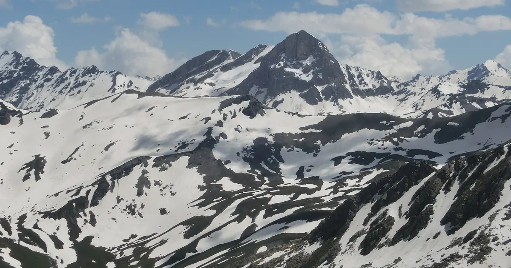

Zugspitze en décembre : la journée glacier allemande face au Garmisch-Classic
Deux domaines se partagent une même ville. Dans nos 46 hivers d'historique, le plateau glaciaire de la Zugspitze a 122 cm un 15 décembre typique à 2627 m, contre 57 cm au sommet du Garmisch-Classic à 2047 m. Les forfaits journée coûtent presque pareil : 70,50 EUR et 69 EUR en ligne.
Consultez les prévisions neige en temps réel pour Zugspitze sur l'application SnowScopeHauteurs de neige, alertes poudreuse et carte 3D, gratuitement.Deux domaines, un mois de décembre
Garmisch-Partenkirchen offre un choix rare. En haut, la Zugspitze, seul domaine glaciaire d'Allemagne, accessible en téléphérique ou en train à crémaillère ; le domaine cartographié commence à la gare de vallée de 995 m et les pistes sont sur le plateau sous le sommet de 2627 m. Plus bas, le Garmisch-Classic : 38 km de pistes cartographiées entre 727 m et 2047 m.
En décembre, la question est simple : payer à peu près la même somme pour une neige sûre en haut, ou pour plus de pistes sur une couche plus mince ?


La neige aux mêmes dates
Au sommet de la Zugspitze, tous nos hivers avaient 30 cm ou plus la semaine du 15 au 21 décembre, et 96 % avaient 60 cm ou plus la semaine de Noël. Même une année maigre (1 hiver sur 10) garde 62 cm là-haut le 15 décembre. L'hiver dernier : 80 cm.
Le Garmisch-Classic est plus contrasté. Son sommet avait 30 cm cette semaine-là dans 89 % des hivers, son milieu (1387 m) dans 48 % seulement, et son bas (727 m) presque jamais : un 15 décembre typique y compte 6 cm. La gare de vallée de la Zugspitze n'est pas mieux lotie avec 12 cm ; personne n'y descend à ski en décembre.
Le prix au guichet
Selon la grille officielle 2026-27, la journée adulte coûte 70,50 EUR en ligne pour la Zugspitze, montée comprise, et 69 EUR en ligne pour le Garmisch-Classic. La page officielle précise que le prix en caisse est plus élevé qu'en ligne. Aucun des deux domaines ne propose de forfait 6 jours sur cette grille.
En décembre, la bonne affaire se joue donc à la journée, pas à la semaine : acheter en ligne, choisir le domaine selon la neige, garder les deux options.
Le bon choix pour chaque skieur
Débutants et familles : le plateau de la Zugspitze, avec ses pistes douces et la meilleure neige de décembre en Allemagne, par temps clair. Bons skieurs : les remontées du haut du Garmisch-Classic dès que le milieu est enneigé, en général fin décembre. Pour tous : par tempête, le plateau peut fermer ou être glacial ; surveillez la prévision et gardez le domaine du bas en plan B.
Conseils aux skieurs
- Achetez la journée en ligne : selon la grille officielle, c'est moins cher qu'au guichet.
- En décembre, skiez le plateau de la Zugspitze et redescendez en téléphérique ou en train ; la vallée est rarement blanche.
- Garmisch-Classic avant Noël : restez sur les remontées du haut ; le milieu n'avait 30 cm mi-décembre que dans environ la moitié de nos hivers.
- Le hors-piste sur la Zugspitze, c'est du terrain glaciaire : lisez d'abord le bulletin d'avalanches de Bavière.
Autres cartes (sites externes)
Références et crédits
- Zugspitze: official lift-pass prices (2026-27), checked 13 November 2026 zugspitze.de/prices
- Garmisch-Classic: official lift-pass prices (2026-27), checked 13 November 2026 zugspitze.de/prices
À propos de ces chiffres
Chiffres de neige : historique SnowScope, 46 hivers passés (1980-81 à 2025-26) aux altitudes de la station, corrigé de l'altitude (une estimation pour une zone, pas les bulletins de la station) ; « bonne neige » = 30 cm ou plus au sol en moyenne sur la semaine. Carte : notre hauteur habituelle au 15 décembre répartie sur le relief selon l'altitude. Pistes et remontées : cartographie OpenSkiMap. Forfaits : grilles officielles des stations, vérifiées le 13 novembre 2026 ; les prix peuvent changer.
Bulletins d'avalanche officiels: Lawinenwarndienst Bayern
Citer ce bulletin
Pour la recherche, l'enseignement ou la presse : chiffres et graphiques réutilisables librement sous CC BY 4.0 avec cette citation.
SnowScope (2026), Zugspitze en décembre : la journée glacier allemande face au Garmisch-Classic, https://snowscope.app/blog/fr/2026/11/zugspitze-december-skiing-germany-glacier-price.html, consulté le 2026-11-14
SnowScope (Atlas Labs). (2026, November 14). Zugspitze en décembre : la journée glacier allemande face au Garmisch-Classic. SnowScope snow reports. https://snowscope.app/blog/fr/2026/11/zugspitze-december-skiing-germany-glacier-price.html
BibTeX
@misc{snowscope2026zugspitzedecemberskiingg,
author = {{SnowScope (Atlas Labs)}},
title = {Zugspitze en décembre : la journée glacier allemande face au Garmisch-Classic},
year = {2026},
month = nov,
howpublished = {\url{https://snowscope.app/blog/fr/2026/11/zugspitze-december-skiing-germany-glacier-price.html}},
note = {Published 2026-11-14 13:29 UTC; accessed 2026-11-14}
}· CC BY 4.0 · Méthodes, données et outils →
Zugspitze : neige et température selon l'altitude, cet hiver vs l'hiver dernier (outils) →
Suivre Zugspitze
Gratuit : un message quand la neige arrive, et la météo chaque matin.
Autres bulletins neige

Grimentz-Zinal propose 71 km de pistes et un enneigement fiable en altitude pour votre voyage en décembre, avec des forfaits 6 jours à CHF 339,00.

Galtür en décembre : 55 cm à mi-pente un 15 décembre typique, 93 % des hivers avec 30 cm à la mi-décembre ; journée basse saison 55,50 EUR jusqu'au 18 décembre.

Notre série de 46 hivers dans les Alpes, 108 points de 667 à 3 872 m : moins de jours de neige partout, nettement à 81 %. Ce qui a changé et pourquoi.